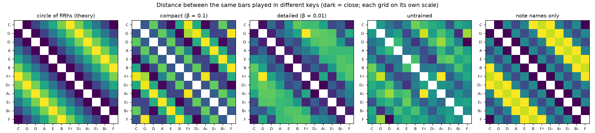
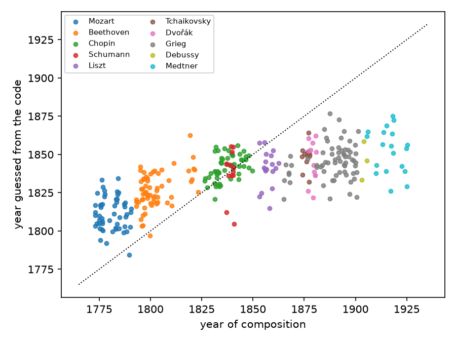

What a neural network learned from 250 years of classical music
I trained a variational autoencoder (VAE) to compress and reconstruct bars of classical music through a latent representation, which also lets it generate new music. Then, I looked inside to see what the model had learned about music theory and history on its own.
In 2023, for my master's thesis, I trained a variational autoencoder (VAE), a type of neural network, on tens of thousands of bars of classical music, from Corelli's trio sonatas of the 1680s to Medtner's piano tales of the 1920s. The model was never told who wrote what, when, or in which key. It was only shown single bars, written as notes on a grid, and asked to summarise each one and reconstruct it.
The question that interested me was what happens inside such a model. To summarise and reconstruct music well, does it end up rediscovering musical concepts that musicians know, like the relationships between keys, or the traits that set composers and eras apart? Three years later, I dusted off the old code, expanded on it, and asked those questions again, this time with more statistically sound methods. This is what I found.
The setting
The music
The music comes from the DCML corpora, a collection of carefully annotated scores assembled by musicologists at EPFL. It contains twelve collections by eleven composers: Corelli, Mozart, Beethoven (both his piano sonatas and his string quartets), Schumann, Chopin, Liszt, Tchaikovsky, Dvořák, Grieg, Debussy and Medtner. Most of it is solo piano music.
I cut every piece into single bars (measures), about 61,500 of them, and wrote each bar as a grid of sixteenth notes: which notes start at each moment, and how long they last. That's all the model sees. No composer, no date, no key, no chord names: just notes on a grid.
The model
The model is a variational autoencoder (VAE), specifically a design called PianoTree VAE, made for polyphonic music (music where several notes can sound at the same time, like chords on a piano, as opposed to a single melody line).
Like every autoencoder, it has two halves. The encoder reads a bar and places it at a position in a 512-dimensional space, the latent space. The coordinates of that position form a 512-dimensional vector, the bar's latent code: a list of 512 numbers that together encode the information about the bar that the model decided to keep. The decoder receives only this latent code and must reconstruct the bar from it, note by note. Since the latent code is all the decoder gets, the encoder has to pack it with whatever matters for the reconstruction.
A plain autoencoder only cares about reconstruction, and it is free to arrange bars in the latent space however it likes. It usually ends up with an irregular latent space: similar bars can land far apart, and the regions between known bars decode to nonsense, because nothing asked the model to make them meaningful.
A variational autoencoder adds a constraint: the model receives a penalty whenever its latent codes stray from a common reference, a round region centred at the origin of the latent space. This penalty keeps the latent codes packed together and pushes the model towards a regular latent space, one that is continuous (nearby positions decode to similar music) and complete (any position, even one where no real bar lives, decodes to something sensible).
Training a VAE means finding the encoder and decoder that minimise a loss, a single number that adds up the two goals for every bar :
- The reconstruction error measures how badly the decoder rebuilds the bar from its latent code. In PianoTree VAE, it has two parts: how wrong the decoder is about the pitch of each note, and how wrong it is about each note's duration.
- The KL divergence (Kullback–Leibler divergence) is the penalty: it measures how far the latent codes stray from the reference.
- β sets the weight of that penalty.
I trained two versions of the model, identical except for β:
- a compact model, with β = 0.1. The penalty weighs heavily, so its latent codes must stay economical: it should keep the gist of each bar and let the decoder fill in the details with typical music, in exchange for a tidy latent space where random positions decode to plausible music.
- a detailed model, with β = 0.01, a ten times lighter penalty. Its latent codes can afford to hold more detail, so it should reconstruct bars more faithfully, at the cost of a less tidy latent space.
Each model took about five hours to train on a free GPU from Kaggle.
Both models behave as expected. Here is how well they reconstruct bars from 60 pieces set aside from training:
| Compact | Detailed | |
|---|---|---|
| Notes reconstructed perfectly | 80% | 91% |
| Bars reconstructed perfectly | 46% | 68% |
| Notes reconstructed perfectly in very busy bars (over 32 notes) | 58% | 69% |
A note is right only if its start, pitch and length all match the original, and a bar only if every note is right. The detailed model is the more faithful of the two, and both struggle with very busy bars.
A typical bar from a Beethoven string quartet: the original, then the detailed model's reconstruction, then the compact model's.
How I looked inside the model
In my thesis, I mostly made colourful 2D pictures of the latent space and described what I saw in them: useful to build some intuition, but lacking scientific rigour. This time, I asked four questions, each answered in the sections below:
- What does a latent code remember about its bar? (section 1)
- How is the latent space organised? (section 2)
- Do relationships from music theory, such as related keys, emerge in it? (section 3)
- Does its picture of music history match ours? (section 4)
I held every answer to three rules:
- Test on unseen music. The model is tested on 60 pieces it never saw during training, and every measurement made on top of it is judged on pieces it wasn't built from.
- Always compare with a baseline. Every result is compared with the same model with random, untrained weights, and with simple measurements anyone could compute (how high the notes are, how many there are, how dissonant they sound). If the trained model can't beat these, it hasn't really learned anything.
- Keep the tests simple. The simpler the test, the more a positive result says about the latent space rather than about the test.
And every finding comes with something to hear: the model's output, played on a sampled grand piano.
1. What does a latent code remember about its bar?
Quick answer: above all what is played (where the notes are, how many, how long they last and, partly, the bar's texture), but not what it means, like the key or the chords.
To find out what a latent code holds, I use a deliberately simple test: a linear model that tries to predict a property of the bar from its latent code. That means training a classifier when the answer is a category (major or minor?) and a regression model when it's a number (how high is the bar?). If such a simple model succeeds, the information is in the latent code in plain sight. I tested twelve properties, in three groups: what the bar looks like on a piano roll, its texture, and its musical context. Each linear model is trained on the training pieces and scored on the held-out ones. A score of 1 is perfect. For numbers, 0 means no better than always guessing the average; for categories, the score of pure guessing is given in brackets.
| Property | Compact | Detailed | Untrained |
|---|---|---|---|
| What the bar looks like | |||
| Register (average pitch) | 0.95 | 0.97 | 0.75 |
| Number of notes | 0.96 | 0.98 | 0.99 |
| Notes played together | 0.94 | 0.97 | 0.75 |
| Note length | 0.92 | 0.96 | 0.76 |
| Notes starting off the beat | 0.92 | 0.97 | 0.85 |
| Meter (length of the bar) | 0.96 | 0.96 | 0.88 |
| Texture | |||
| Melodic leaps | 0.65 | 0.70 | 0.26 |
| Dissonance | 0.43 | 0.22 | 0.00 |
| Variety of note names | 0.76 | 0.69 | 0.35 |
| Musical context | |||
| Major or minor key (guessing: 0.50) | 0.56 | 0.55 | 0.54 |
| Which of the twelve keys (guessing: 0.08) | 0.29 | 0.23 | 0.24 |
| Opening chord major or minor (guessing: 0.50) | 0.52 | 0.51 | 0.50 |
What the latent code holds is, above all, a faithful picture of the notes: everything about what the bar looks like can be read almost perfectly from both trained models. But the untrained control shows that part of it comes for free. Even with random weights, the architecture produces latent codes from which the number of notes can be read perfectly, and the meter and the offbeat notes very well. Training matters most for where the notes are and for the bar's texture: how much the melody leaps, how dissonant the harmony is, and how many different note names it uses. Note also that the detailed model, although it stores more, makes dissonance harder to read than the compact one: the information is there, since it reconstructs the notes better, but in a more tangled form that a simple linear model can't pick out as easily. It's a hint of the trade-off in the next section.
What the latent code doesn't make readable is musical context. Whether the piece is in a major or a minor key, which of the twelve keys, which chord a bar opens on: a single bar's latent code reveals these barely better than a guess, and when it does, the untrained model does almost as well. The model stores what is played, not what it means.
2. How is the latent space organised?
Quick answer: smoothly along paths between real bars, but with holes elsewhere, and with simple directions for pitch and busyness, but not for dissonance or transposition.
A well-organised latent space should pass two tests. Positions between real bars should decode to something that still sounds like music, and moving in a given direction should change the music in a predictable way. I checked both.
What lives between the real bars?
Since every position in the latent space can be decoded, we can ask what lives between the real bars. I picked 1,000 random positions in each model's latent space and decoded them.
Four bars decoded from random points in the compact model's latent space.
And four from the detailed model's latent space.
To see how close they come to real music, I compared a few simple properties of these random bars with those of real bars from the held-out pieces, and trained a classifier to tell random bars from real ones using the same properties.
| Real bars | Compact | Detailed | |
|---|---|---|---|
| Notes per bar (median) | 14 | 12 | 13 |
| Notes played together (average) | 2.27 | 2.27 | 2.30 |
| Dissonance (share of tense note pairs) | 0.15 | 0.15 | 0.31 |
| Time with sound in the bar | 97% | 73% | 74% |
| Spotted as fake by the classifier | – | 83% | 91% |
The compact model's random bars match real music on what is played: as many notes played together, the same register, and exactly as much dissonance. What gives them away is when nothing is played. Real bars almost never fall silent, while random bars often leave gaps of a beat or two, and that alone lets the classifier spot them 83% of the time. The detailed model's random bars have the same gaps, are twice as dissonant as real music, and are even easier to spot (91%).
Positions on a path between two real bars do much better. These paths are smooth: the music changes gradually, without gaps, and halfway between two real bars of the compact model, the classifier can't reliably tell the decoded bar from real music (52%, where 50% is a coin flip).
This is my favourite experiment: pick two real bars from different eras, and let the model walk from one to the other, making up music nobody ever wrote along the way. The walk at the top of this article does it three times in a row, all the way from Corelli to Debussy. Here is a single leg: two minuets, Mozart's and Debussy's, written more than a century apart.
So the decoder isn't the problem: real music simply doesn't fill the whole latent space. Random positions often land in the empty regions in between, called holes, where the decoder has to improvise. A heavier penalty (a higher β) should shrink the holes, but it also leaves less room for detail in each latent code.
That's the central trade-off of the whole project, and our two models sit on either side of it. The detailed model, with its lighter penalty, is better at reconstructing real music, but it has bigger holes. The compact model, forced to economise, keeps its latent space tidier, and its random bars come closer to real music. The two models will keep disagreeing in interesting ways.
Are there directions with a musical meaning?
If the latent space is well organised, some directions in it should correspond to musical qualities. I looked for three, in the compact model: pitch (how high the notes are), busyness (how many notes a bar has) and dissonance (how many of the notes played together sound tense). To find the direction of "higher", I took the average latent code of the highest bars and the average latent code of the lowest ones, and drew an arrow between them. I did the same for the other two qualities, then moved bars along each arrow and decoded them.
The results show that "higher" and "busier" are real knobs:
One bar pushed along the "higher" direction, in five steps.
The same bar pushed along "busier".
Interestingly, "more dissonant" isn't: in the latent space, dissonance is tangled up with density, because busy bars tend to have more tense combinations.
The same bar pushed along "more dissonant": it mostly gets busier, from 10 notes to 21.
A stricter test is transposition. Shifting a bar up by three semitones (transposing it) keeps the music identical, only higher. If the model stored music as "a melody shape plus a key", transposing should move every bar's latent code along the same arrow. It doesn't: when I transposed 300 bars, each latent code moved in its own direction, with almost nothing in common between them. So there's no single "transpose" direction. Pushing a bar along the "higher" arrow keeps its rhythm and raises it by roughly the right amount, but it moves its notes unevenly, so the melody and the harmony drift: only about a fifth of the notes match the truly transposed bar.
A bar, then the same bar truly transposed up three semitones, then the bar pushed "higher" by the same amount in the latent space. The rhythm is the same, but the notes have drifted.
3. Does music theory emerge in the latent space?
Quick answer: yes, but differently in each model, with the detailed model arranging keys along the circle of fifths, as musicians do, and the compact model grouping them by major thirds.
The model only ever saw notes on a grid. Music theory, on the other hand, describes higher-level relationships between them: keys, chords, harmony. Nobody taught the model any of it. But to reconstruct music well, it may have picked up some of these relationships anyway, and arranged its latent space around them. I looked for one of the best-known: how the twelve keys relate to each other.
Musicians know that some keys are close relatives. The key of C uses the notes C, D, E, F, G, A and B; the key of G uses six of the same seven notes, so moving from one to the other sounds smooth. F♯, on the other hand, shares only two, and sounds far away. Arranging the twelve keys so that neighbours are related gives the circle of fifths.
The same bar in C, then in G (a close relative), then in F♯ (the most distant key).
To see whether the models learned this, I played 600 bars in all twelve keys, encoded every version, and measured how far apart the versions ended up in the latent space. If the model learned how keys relate, versions in related keys should end up closer together.

The detailed model rediscovered the circle of fifths. For it, the closest keys to C are G and F, its neighbours on the circle, and the circle orders its distances almost perfectly (a rank correlation of 0.89). The really interesting part is that it matches the circle better than simply comparing which notes the keys use (0.75), even though nobody told it about keys; it only had to replay bars, and it arranged the keys the way musicians do.
The compact model found something else: it groups keys that are a major third apart, like C, E and A♭, the corners of the dashed triangle above. That is also a structure music theorists know: these three keys split the octave into equal steps. The untrained control shows a different, weaker pattern, so both structures come from learning, not from the architecture.
Why would the two models disagree? I can't prove it, but there are clues. The detailed model keeps a fine record of which notes a bar uses, and keys that share many notes, like C and G, end up close: the circle of fifths falls out of the notes themselves, and the model sharpens it. The compact model has less room, and seems to keep a coarser record of pitch in which notes a major third apart are easier to mix up. That may be less arbitrary than it sounds: major and minor chords are built from thirds, so a record of pitch organised around them may be a cheap way to keep chords recognisable with little room, at the cost of blurring which key they belong to.
So how much a model is allowed to remember changes what it discovers. Both structures are real features of Western harmony, and neither model is wrong. But the same music, seen through a narrower window, gave a different piece of theory. What a model "learns" depends not only on the data, but on the constraints it learns under.
4. Does the model's picture of music history match ours?
Quick answer: partly, with a clear divide between Classical and Romantic music and Beethoven in between, but no further change after about 1830, and much of it already visible in simple surface statistics.
This section asks two things. Can the latent codes tell who wrote a bar, and when? And when the model's picture of musical change is spelled out, does it match what we know about the eras of classical music and how their writing differs? To keep it fair, I transposed every bar to C, so that a composer's favourite keys can't give them away, and every piece is judged by a classifier that was never trained on it.
Who wrote this bar, and when?
A classifier reads the latent codes and guesses the composer, out of eleven. I scored it on single bars, and on whole pieces by pooling its guesses over all their bars. Guessing at random would get about 9%.
| Composers recognised | Compact | Detailed | Untrained | Simple measurements |
|---|---|---|---|---|
| From one bar | 32% | 33% | 27% | 29% |
| From a whole piece | 51% | 48% | 42% | 42% |
Both trained models recognise composers far above chance, but the controls are close behind: much of a composer's fingerprint is already visible in simple things like register, chord sizes and note lengths. The latent code's real edge shows on whole pieces, about ten points above both controls.
Some composers are much easier to recognise than others. Among the piano composers, Chopin is the easiest: more than half of his pieces are attributed to him. That's probably less about his genius than about the corpus, which only holds his mazurkas, all in 3/4. When the classifier gets it wrong, the mistake sometimes makes musical sense, like Mozart and Beethoven being mistaken for each other. But overall, composers who lived closer in time aren't confused more often.
The timeline does show up when the question is asked directly. Asked to date unseen piano pieces from their bars, a regression reading the compact model's latent codes is off by 29 years on a typical piece. The plot below shows how it gets there: it puts the music in roughly the right order (Mozart before Chopin before Grieg and Medtner), but squeezes everything towards the middle, dating Mozart around 1810 and Medtner around 1850. A sense of time, then, but a blurred one: nobody would mistake it for a musicologist.

What does "later" sound like?
Finally, I drew an arrow in the compact model's latent space from the earliest piano bars (Mozart, early Beethoven) to the latest ones (Grieg, Debussy, Medtner). First, where does each composer fall along it?
The model sees one big divide in music history. Mozart sits at the early end, and every composer from Chopin onwards sits towards the late end. Beethoven's piano music falls in between: his early pieces about halfway, his late ones close to the Romantics, much like his textbook role as the bridge between the Classical and Romantic eras. After about 1830, the arrow sees no further change: Medtner, writing in 1917, sits where Chopin does. The corpus is partly to blame, as its latest composers are Medtner, who wrote in a late-Romantic style, and Debussy, with only three pieces.
Then I pushed bars of Mozart and Beethoven along the arrow. They get lower and spread wider across the keyboard, with bigger chords and longer notes: the fuller piano writing of the late 19th century. Textbooks would expect later music to be more dissonant too, but this corpus shows no such trend, and neither does the arrow.
A bar from the 1780s–1800s, pushed step by step towards "later" in the latent space.
Limitations and future work
Each limit of this study suggests a next step.
- One bar is very little music. Style, harmony and form unfold over phrases, which the model never sees. Next: encode whole phrases, or model sequences of latent codes.
- The corpus is small and unbalanced. Chopin is only represented by mazurkas, Debussy by three pieces, the latest composers still write in a late-Romantic style, and Corelli is the only Baroque composer. Next: more composers and eras, compared within a single genre.
- The model can't yet generate convincing bars from random sampling of the latent space. Random positions decode to bars with gaps of silence, even with a heavier penalty (β = 0.3). Next: learn the shape real music takes in the latent space, and draw new positions from it.
Looking back
The most striking thing, for me, is how much music theory and structure appears in a model that was only ever asked to replay single bars: knobs for register and density, keys arranged by fifths or by major thirds, a sense of who wrote a piece and of how piano music changed over time. None of it was taught.
When I wrote my thesis, I suspected that some of this might come from the model's architecture rather than from the music. Revisiting it, I compared every result with an untrained model and with simple measurements. That changed several conclusions: part of what looks like learning is just the architecture, or just counting notes. But once you subtract that, quite a lot is left.
To me, that's a testament to how much deep learning models can learn from data alone, even small ones, built without the transformers behind today's chatbots.